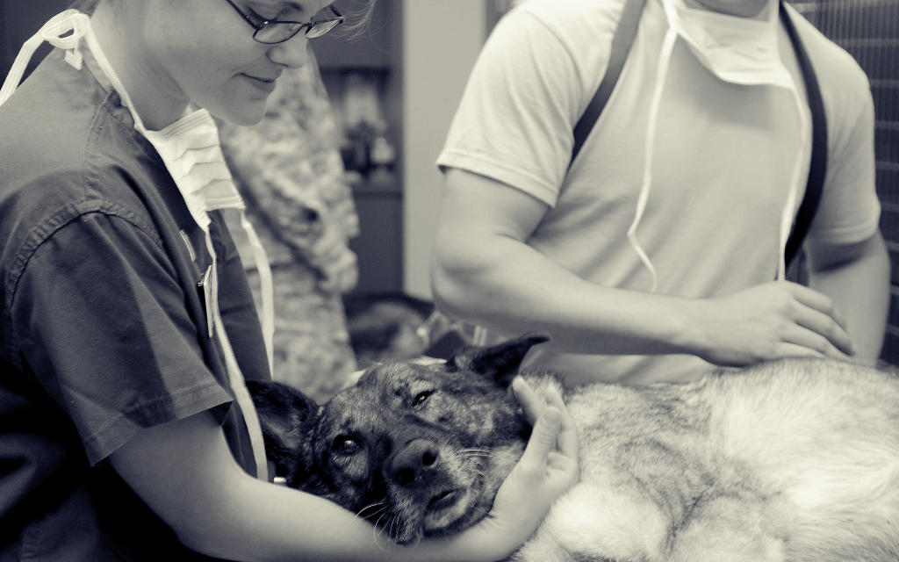
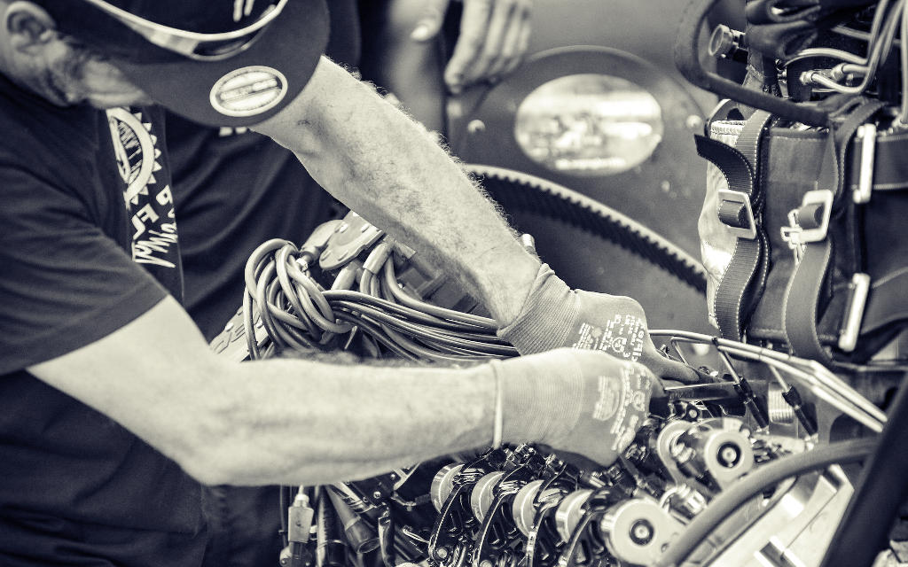
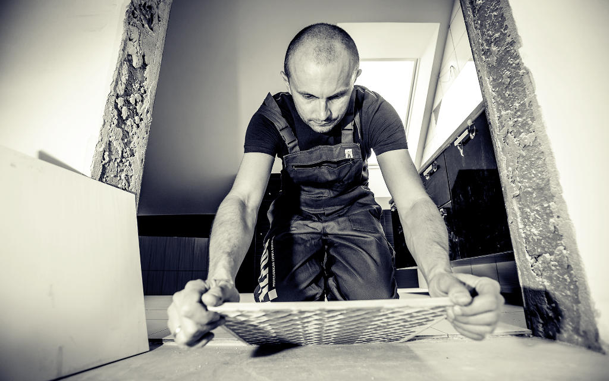
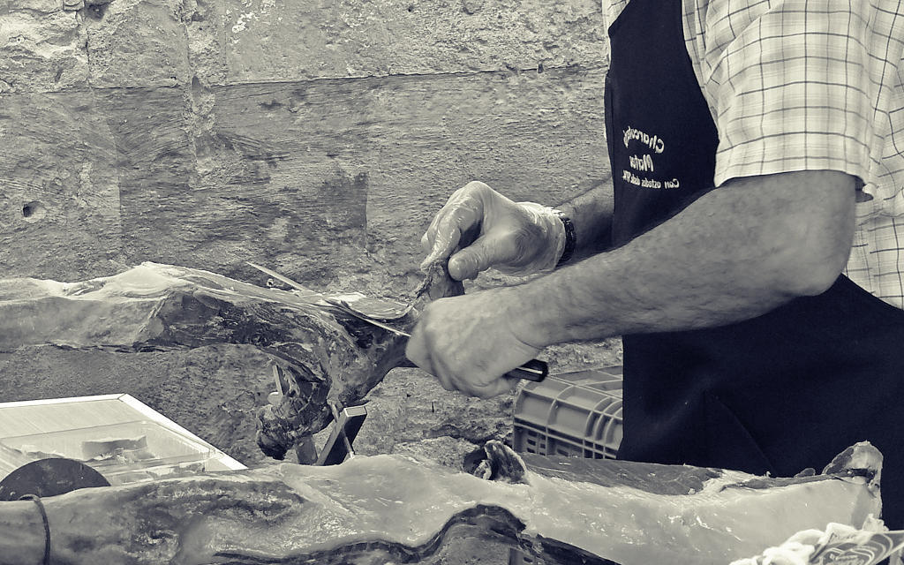
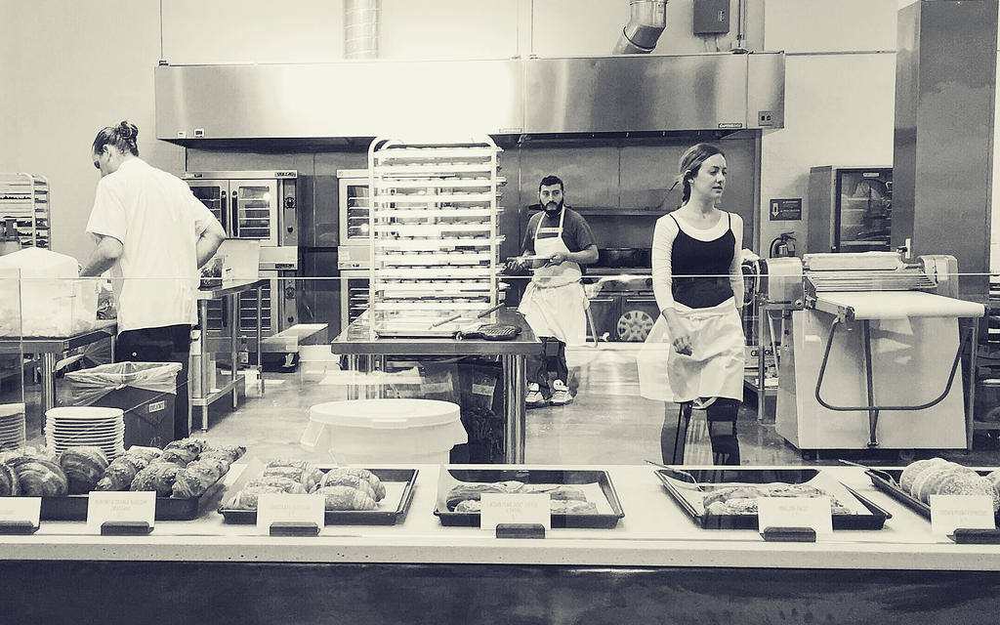

Upokorzeni przez PiS Polacy to zwykli ludzie,
którzy uczciwie pracują.
Polski ład to dla nich nowe podatki.
-
Pan Krzysztof
Wykształcenie: zawodowe
- Od 15 lat prowadzi piekarnię.
- Zatrudnia 3 osoby.
- Podatki PiS zabiorą mu 1 pensję na rok.
- Zamiast 12 pensji, będzie miał 11.
-
Pani Iwona
Wykształcenie: zawodowe
- Od 5 lat prowadzi własną kwiaciarnię.
- W pracy pomaga jej siostra.
- Podatki PiS zabiorą jej 1 pensję na rok.
- Zamiast 12 pensji, będzie miała 11.
-

Pani Marta
Wykształcenie: wyższe
- Od 11 lat jest lekarzem weterynarii.
- Zatrudnia 1 osobę.
- Podatki PiS zabiorą jej 1 pensję na rok.
- Zamiast 12 pensji, będzie miała 11.
-

Pan Michał
Wykształcenie: technikum
- Prowadzi warsztat mechaniczny od 24 lat.
- Zatrudnia 7 osób.
- Podatki PiS zabiorą mu 1 pensję na rok.
- Zamiast 12 pensji, będzie miał 11.
-
Pan Szymon
Wykształcenie: wyższe
- Od 4 lat jest programistą.
- W tym roku planował zatrudnić 2 osoby.
- Podatki PiS zabiorą mu 1 pensję na rok.
- Zamiast 12 pensji, będzie miał 11.
-
Pani Karolina
Wykształcenie: studiuje
- W tym roku kończy studia,
- jest początkującym lekarzem.
- PiS jeszcze niczego jej nie zabierze.
- Planuje pracować za granicą.
-

Pan Piotr
Wykształcenie: technikum
- Od 8 lat prowadzi firmę budowlaną.
- W pracy pomaga mu ojciec
- Podatki PiS zabiorą mu 1 pensję na rok.
- Zamiast 12 pensji, będzie miał 11.
-

Pan Maciej
Wykształcenie: zawodowe
- Od 17 lat prowadzi zakład mięsny.
- Zatrudnia 12 osób.
- Podatki PiS zabiorą mu 1 pensję na rok.
- Zamiast 12 pensji, będzie miał 11.
-
Pani Anna
Wykształcenie: technikum
- Od 8 lat prowadzi sklep spożywczy.
- Zatrudnia 2 osoby.
- Podatki PiS zabiorą jej 1 pensję na rok.
- Zamiast 12 pensji, będzie miała 11.
-

Pani Patrycja
Wykształcenie: zawodowe
- Od 9 lat prowadzi restaurację.
- Zatrudnia 4 osoby.
- Podatki PiS zabiorą jej 1 pensję na rok.
- Zamiast 12 pensji, będzie miała 11.
Ci ludzie od wielu lat uczciwie pracują i dbają o pracowników.
Podwyżka podatków to dla nich kara za pracę i poświęcenie.
Zostali upokorzeni przez PiS.